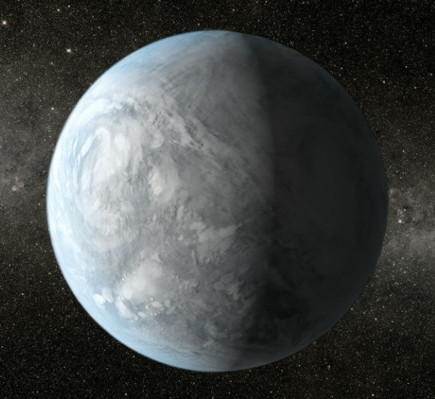

The Orbitrap analyising certain material can mean:
- Understanding more of the environment in planet
- Can help find certain organism if found
- Find similarities with Earth
Space exploration has been a growing field and conversation for the past century, so many new discoveries made in such little time. First moon landing in 1969, now in 2023 there is a preparation of the next moon landing and trying to gather as much information/materials as possible in a limited time. Since 1969, so much new technology has been invented to help make NASA team jobs easier. It also opens the possibility of finding certain materials use as survival and may lead to findings of extraterrestrial life.
The Orbitrap analyising certain material can mean:
The University of Maryland team developed an instrument to help identify compositions of materials and also signs of life, called the Orbitrap. The device contains traviolet laser the helps remove small amounts of material from samples. It has the same features and benefits as its older versions and only weights 17 pounds and not as much power is needed. One of the benefits of such device is that the laser does not destroy parts of the sample, It is very delicate that once tested on ice it was still able to analyize and figure out its composition, as well as high mass resolution. During the next years the Orbitrap will be used into other planets and the moon in the next missions NASA has next. The Orbitrap is a new device opening the door for greater inventions for geochemistry and astrobiology that may lead to finding signs of life as well as planet materials.
